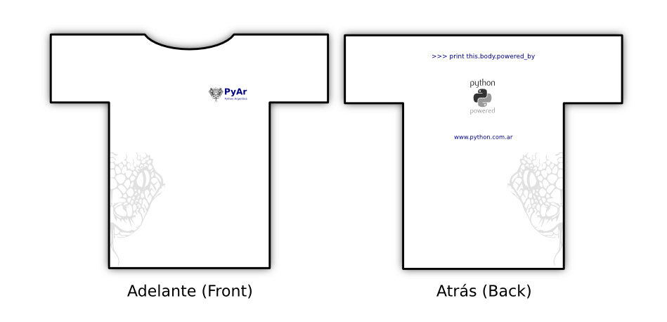

Habemus ganadorus: Ganó el tercer diseño de Cesar Roldan, RemerasV2/CesarRoldan3.
Esta es toda la info de los sufragios, con las direcciones de mail saneadas:
Por favor, anotá en RemerasV2/PreAnotados cuantas remeras pensás comprar, de qué tamaño y color.
Propuestas
Proceso
Python Argentina declara abierto el proceso de creación de las Remeras 2.0.
Para ello, vamos a seguir un esquema parecido al que se usó en el diseño de la bandera, que fue por votación. En este caso, sin embargo, vamos a hacer que cada persona que proponga un diseño cree una página hija aquí, usando su nombre y un nro consecutivo, por ejemplo,
, y en esa página ponga una imágen (recomendamos PNG) con el frente y el reverso de la remera, y adjunto en la página (para bajarlo, pero que no se muestre), el diseño original de la misma (en formato SVG), y toda la información que corresponda (si usó alguna font en particular, puede subirla también, pero siempre todo tiene que ser de uso libre).
El resto de la gente podrá visitar esas páginas, y agregar comentarios abajo de los diseños, de manera que el autor pueda mejorar (si quiere) su diseño. La gente, también, podrá usar esos diseños como base para propuestas propias. En general, los diseños subidos serán de dominio público.
Cuanto antes la gente suba sus diseños, más comentarios recibirán para mejorarlos y tener más chances de ganar (pero también tendrá más chances de que le forkeen el diseño, pero esa también es un poco la idea, ;).
Si alguien no quiere tomarse el trabajo de armar la página, puede mandar un .zip, .tar.gz, o .tar.bz2 con el SVG y demás info a admin EN python PUNTO com PUNTO ar , que yo me encargo.
Con respecto a la cantidad de colores, tengan en cuenta que pueden elegir el color de la tela (pero esto es un riesgo, ya que si se van del blanco o el negro luego quizás sea dificil encontrar el color exacto), y que pueden usar un (1) color al frente, y uno o dos (1 o 2) colores en la espalda.
La votación será por mail, a remeras08 EN python PUNTO com PUNTO ar , indicando hasta tres diseños, con un puntaje del 1 al 5 (el 5 es lo más) cada uno.
Luego de un tiempo, se congelarán los diseños, y se someterán los mismos a votación. Luego de la elección, el autor tendrá derecho a alguna pequeña modificación del diseño (lo ideal serían cambios imperceptibles, que no cambien el corazón del diseño, pero que permitan mejorar algo).
El que gane tendrá el honor de recibir una remera gratis, o pagar una vuelta de cerveza a todos en la próxima reunión de PyAr, según elija.
Arrancamos en este mismo instante! Los plazos son:
hasta el 11 de Julio para diseñar, proponer, y corregir según indicaciones.
del 11 hasta el 18 de Julio, para votar.
Luego, veremos donde hacemos las remeras, pero la idea es tenerlas para antes de las 8JRSL.
Saludos, y largaaaaaaaaaaaaaaaaaron!